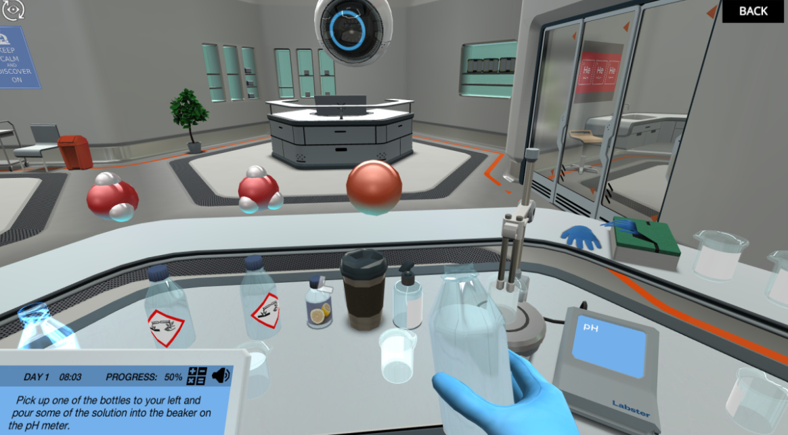
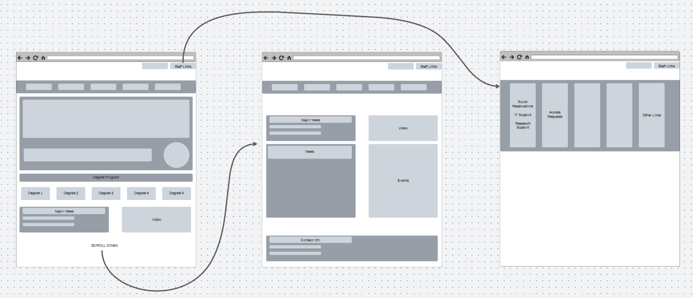
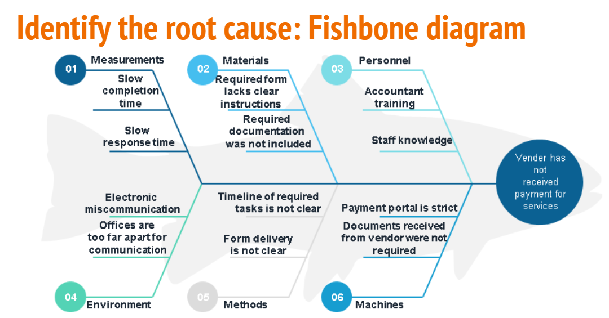

During the COVID-19 pandemic, schools and workplaces had to quickly find solutions to provide virtual alternatives to the services that are normally offered.
I managed the procurement and implementation of an entirely virtual option for lab courses for biology students at a large university.
Problems
Lab courses typically require hands on activities to teach students how to use lab equipment and perform experiments, however hands on activities were difficult to provide in a virtual setting.
There were concerns that students would have to purchase individual subscription plans that would be costly.
Some prospective vendors required students to create accounts to be stored in a server that was not secure or could not be reached by instructors.
Solutions
There are several well-known companies and organizations that could potentially provide virtual lab simulations. However, there was only one that could be integrated into the already existing learning management system (LMS).
Labs provided by a company called Labster were selected due to the ease of the subscription plan, compatibility with existing LMS, and offerings in subjects.
Outcomes
Final Product:

Online education has never been more easily accessible than now.
Virtual options for online education have shown to be as effective as traditional education, depending on the student or target audience participating.
I moved a department’s website to an entirely new and modern platform via Wordpress.
Problems
The department’s website was outdated.
Content and information on the website were difficult to find.
The information found on the website was wrong or inaccurate.
Solutions
Mockup:

I went through 400+ existing web pages and organized them into categories for different audiences in order to create a site plan.
I condensed the number of existing web pages to less than a quarter of what it once was by consolidating the information found on the original web pages.
I moved all of the content into entirely new web pages on an entirely new platform.
Outcomes
Individual stakeholders will always think that their priorities are the most important for the organization.
End users who are used to old technologies or systems will always compare new products to what used to exist.
This project was an assignment for a learning technologies course. The assignment was to create a root cause analysis (RCA) for a scenario that could happen in the workplace.
An RCA is a tool that is used to identify the underlying problem that results in an undesired performance.
I took a real work scenario that I experienced and investigated ways of preventing the possible issues.
Problems
The work scenario I chose was an invoicing issue.
The vendor had not been paid for the services or products that they provided several months prior.
Solutions
I used four methodologies to identify the problems.
First, I created a fish bone diagram, a consulting method whereby consultants come in to identify all the possible causes of a problem. The fish bone diagram assists in assessment of a situation when very little information is known.
Second, I created an intervention logic, which shows the actions required in a workflow to reach a target or create a product.
Third, I used a school district’s model for interventions, which shows how interventions are cycles, rather than linear one-time fixes.
Finally, I used a level based model for implementation plans, created by a federal agency, to develop an implementation plan for my solutions. In this model, issues come from varying levels of authority or environments, which can all be addressed individually.
Fish Bone Diagram:

Outcomes
Assessing situations can be difficult, especially if you don’t know anything about the people or tasks involved. This is where a needs assessment is useful.
A needs assessment is can take about as much time as the development of the product or service.
A single change in a workflow can drastically improve the resulting conditions or productsm which ultimately impacts change management.
This project is a game that I created using a service called Scratch.
Scratch enables users to learn about computer science algorithms with a computer program being the final product.
My game requires game players to get the soccer player character to the goal while also avoiding the dangerous virus.
Note: This product is not suitable for mobile devices.
Problems
I wanted to make sure that the game player could not get to the goal in a simple straight line.
I wanted to enable the virus to penalize the game player.
I also wanted to incorporate loops where, for the entirety of the game, if the game player caused a certain event to happen, then it would force the game player to start over.
Solutions
To require the game player to maneuver through the game rather than moving in a straight line, I set up a game map.
The player must use their keyboard arrow keys to move the game character through the game map.
If the game player ever encountered the virus, then the death counter would increase.
The playable area within the game map had boundaries. If the game player ever crossed the boundary lines, then they would have to start over at the starting point.
Outcomes
Computer science algorithms are just a series of user inputted requests.
If you enter something into the computer to ask for a response, then the computer will provide a response.
Scratch is one of many popular technologies used to teach students about the maker movement and the logic of computer science algorithms.
Final Product:
This project was as assignment for a learning technologies course.
The assignment was to create a lesson plan for a short “mini-unit” for a topic of my choice.
I used my background in virology to create learning objectives, activities, and assessments.
Problems
The lesson plan needed to have objectives, cover Georgia Science Teaching standards, activities that incorporated use of technology, and a final assessment.
Solutions
All learning objectives, Georgia Science Teaching standards, activities, and assessments are listed on the respective day’s lesson cover page.
Outcomes
Learning theories incorporated into the lesson plan are Gagne’s events of instruction and Bloom’s taxonomy.
The items planned for each day exist so that the learner experiences all nine events of Gagne’s events of instruction.
The objectives and activity instructions are written according to Bloom’s taxonomy.
Technology used in the lesson plan included but are not limited to Parlay, Google Classroom, and Google Jamboard.
Final Product:
This project was an assignment for a design research course. I created a presentation to go along with a guided discussion that I led in a small class.
Problems
There are many fields of academia that are considered design research. The problem is that there are many terms for the same concepts for all of the fields in question.
I needed to make my presentation interactive, while also presenting the content.
Solutions
In this presentation, I present a framework for design research that is applicable to all fields in question.
The presentation includes interactive activities throughout the duration of the presentation and a final discussion activity in the end.
This presentation is only meant to be a tool to go along with a discussion style lecture on the topic.
Outcomes
When presenting to audiences, make sure to not rely on the presentation. The presentation should only aid in what the presenter is saying. xt
Presentation slides should not have too much information, only the key concepts.
Final Product:
This project was a product that I created during my time working in an academic department at a large university. The department needed a way to communicate information on various enrollment issues to students.
Problems
Students had several issues that they needed assistance with, ranging from academic advisement, financial aid, and human resources.
The department was short on staff and many staff were working remotely.
Solutions
I created a poster with QR codes that led to helpful websites and provided contact information.
The QR codes on the poster are organized by target audience.
My design was printed onto signage placed throughout the school buildings.
Outcomes
The header texts of each section were strategically capitalized in order to indicate the target audience.
The color of the text is white to complement the background color of the headers, and provide accessibility for visually impaired audiences.
This project was an assignment for a learning technologies course. The project is a short movie that I created.
Problems
The short movie needed to have a story, a soundtrack, visuals, and credits.
Solutions
I wrote the script based on a scary story that I read off of the internet. I illustrated the visuals. All aspects of the movie were put together by me except for the soundtrack.
The soundtrack only consists of one song, which is credited in the credits. The song did not require a license to use.
Outcomes
Short stories were the original way that humans passed on knowledge to one another. Movies help the audience see and imagine the events in stories.
To communicate stories, content creators write and create tools to share information through the use of storytelling.